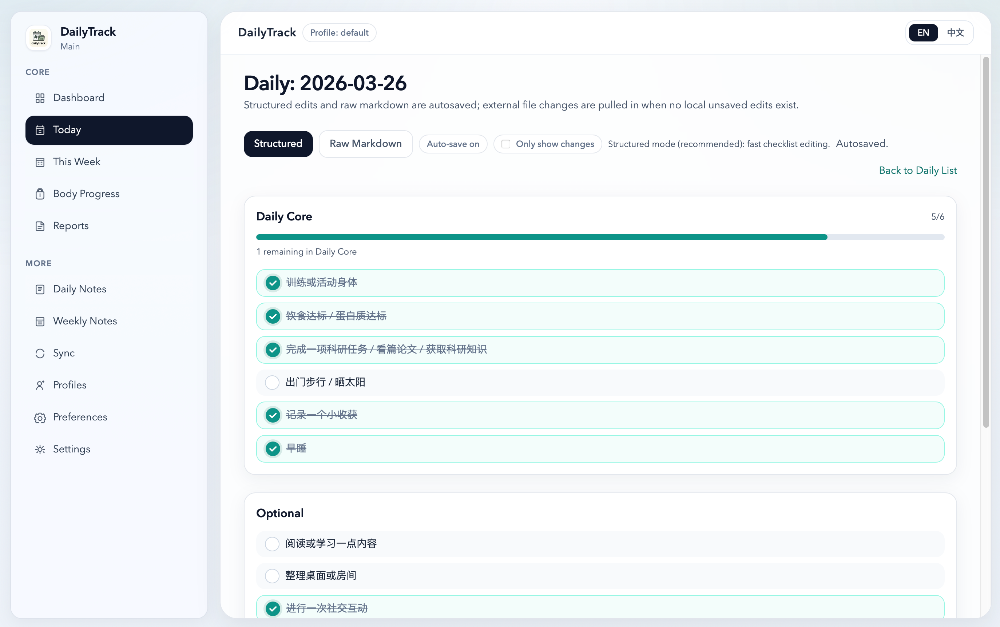
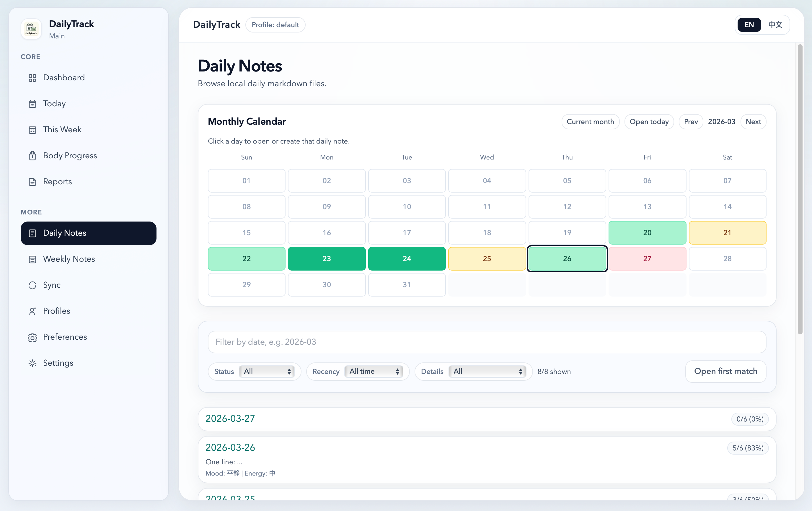
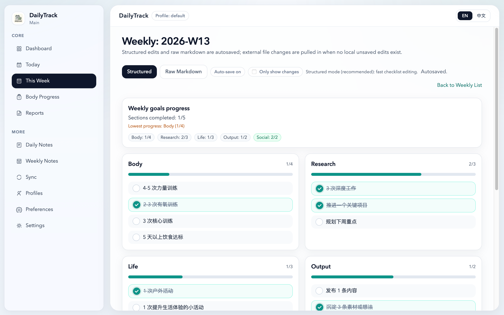
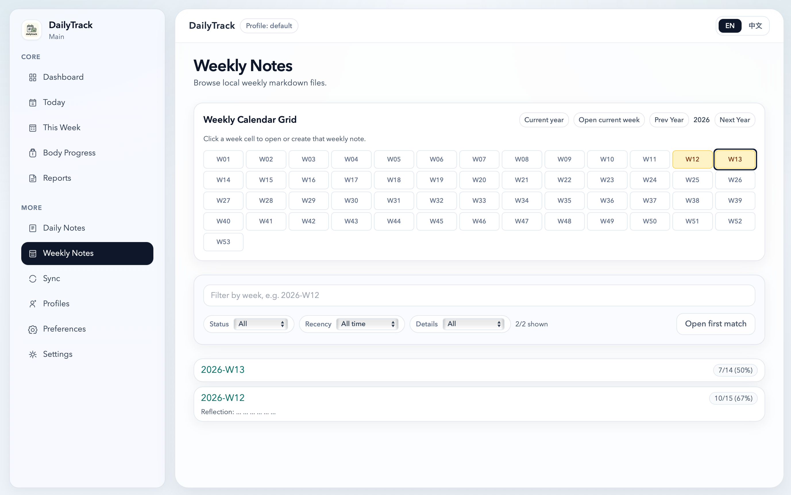
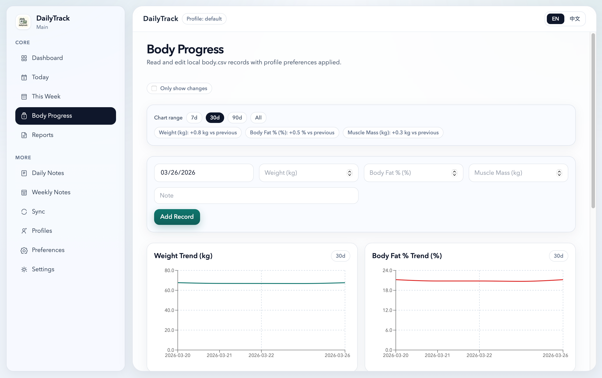
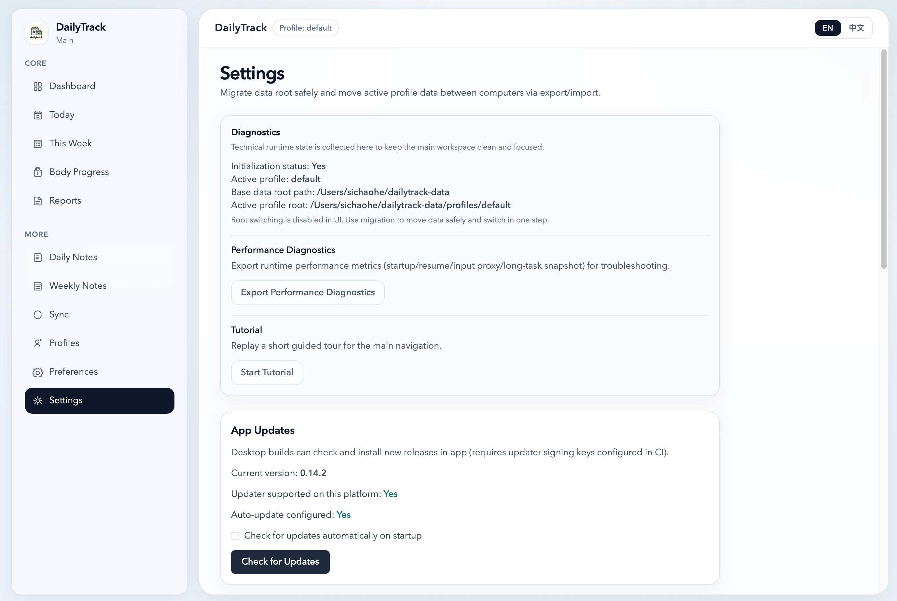
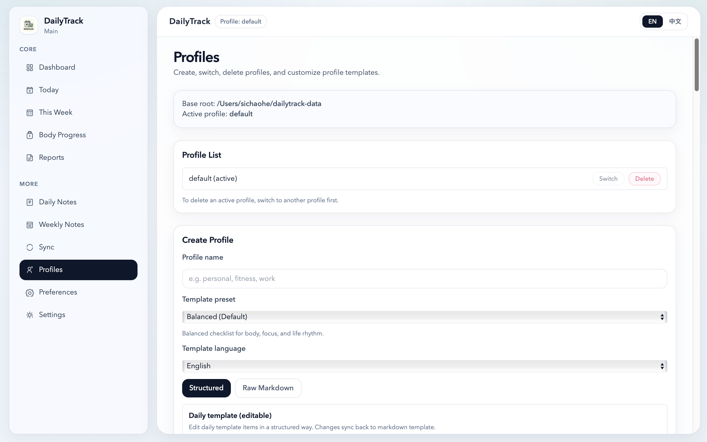
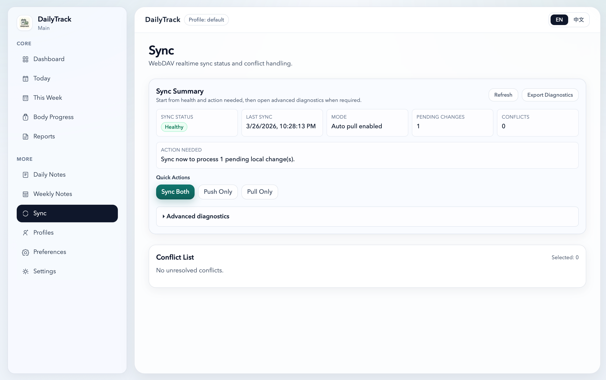
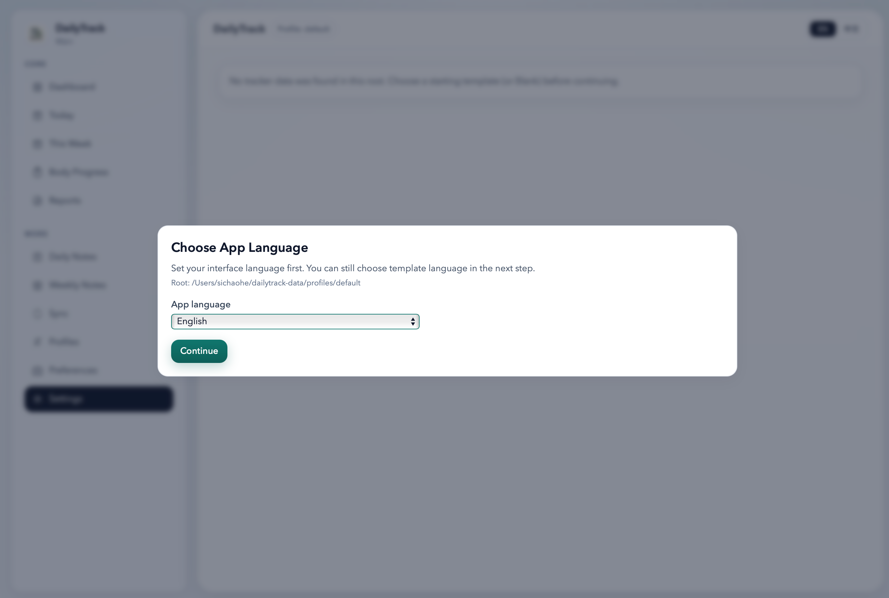

Local files first
Markdown and CSV remain the only source of truth.
LOCAL-FIRST LIFE TRACKING
dailytrack reads and writes Markdown/CSV directly on your device, with structured editing, autosave, and sync tools that never replace local files as source of truth.
Markdown and CSV remain the only source of truth.
Fast checkbox workflows and raw markdown fallback in one place.
Safer delete flow with profile trash + in-session undo restore.
WebDAV snapshot + realtime sync with conflict resolution tools.
macOS, Windows, and Android APK sideload support.










Stable signed channel is the target. Current public builds follow testing-channel expectations.